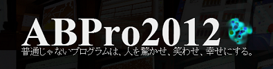

ABPro2013は大盛況のうちに終了しました！
お忙しい中，普通じゃない発表していただいた皆様，また聴講にお越しいただいた皆様には，ここで改めて御礼申し上げます．今年は新キャンパスでの開催となりましたので，何かとドタバタする場面もございましたが，皆様のご協力のお陰で無事に，そして盛大に行うことが出来ました．運営委員会一同，ご協力に感謝しております．
大学1年生から博士課程の学生，OB・OG・教員等の社会人までがそれぞれの本気のプログラム作品とプレゼンテーションをぶつけ合う，熱く，エネルギッシュなイベントとなりました．このイベントは，「自らが発想し，コーディングやハッキングをする楽しさ，それを人に披露する喜びはどの世代においても変わらないものなのだ」と教えてくれます．
「ABPro」という名を冠してから3年が経ち，イベント発足から6年が経つこととなりましたが，この普通じゃないエネルギッシュな何かは，確実に受け継がれています．そして，この何かは参加してこそ体感できるものでしょう．来年以降もABProは皆様のご参加を心待ちにしております．
ABProとは！
自作の「普通じゃないプログラム作品」を発表しあう会，それがABProです．
高度な技術や専門的な知識を用いるのも良いですが，我々が目指すのは，
人を驚かせ，笑わせ，幸せにするようなプログラムです．
ABProが@ITで紹介されました！！
プログラムを「どや！」と発表し合う、明治大学アブノーマルプログラミング！！

発表会概要
●日時： 2013/09/14 10:30 - 17:00
●会場： 明治大学 中野キャンパス 5階 ホール（東京都中野区中野4-21-1）
＿
●主催： 明治大学 宮下研究室
●Let's tweet!： Tweet 公式ハッシュタグ：#ABPro
● 参加登録：不要！！
発表を行う場合は事前に発表申し込みをお願いします．
●発表申し込み：締めきりましたが．．．
●発表申し込み締切：2013年9月07日23時59分59秒
●懇親会：17：00～ 懇親会費用500円 お気軽にご参加ください！
ご来場の際の注意
東側自動ドアの作動は，10：00～17：00となります．
お帰りの際は1階エレベータ横の，防災センター横通用口をお使いください．
発表時の注意
発表は原則製作者が行ってください．
発表時間は午前セッション３分，午後セッション５分を予定しております．
発表するものは，「プログラムなら何でも可」とします．
ハードウェアであるかソフトウェアであるかは問いません．
Ustreamなどの映像配信は行いません．
VGA，HDMI，ステレオミニプラグの3種類のケーブルをこちらで用意します．
それ以外のHDMI-mini,ディスプレイポート等の特殊な規格の場合は変換アダプタをご持参ください．
特別講演
「ちょっと普通じゃないプログラミング言語 PureData」松村誠一郎さん
松村誠一郎さんは現在，東京工科大学デザイン学部准教授，東京藝術大学非常勤講師をされており，体験型のサウンドインスタレーション作品の制作やサウンドデザインの研究を進めています．作品は全国で展開中の「魔法の美術館」展に出展されています．2002年アジアデジタルアート大賞を始め，受賞多数。
PureDataに関する書籍「Pd Recipe Book ～Pure Dataではじめるサウンドプログラミング」（BNN新社）を出版し，今年２月には日本語用Pure DataポータルサイトPureDataJapanを立ち上げました．書籍やワークショップでは，Pure Dataを使ったインタラクティブなサウンドプログラムの作り方を初心者にもわかりやすく解説しています．
タイムテーブル
10：00 開場 受付開始
10：30 午前セッション
11：30 パネルディスカッション
「PERACONからみる普通じゃない！？ゲーム企画」
CEDEC2013で毎年開催されているPERACONを題材として挙げつつ、良いゲーム企画とは何か？また、その良さを伝えるにはどうすればよいか？について議論します。
12：00 昼休憩
13：00 午後セッションA
休憩
15：00 特別講演
「ちょっと普通じゃないプログラミング言語 PureData」
15：40 午後セッションB

運営委員会
運営委員長
M2 永瀬 翔
副運営委員長
M1 高橋 治輝
運営委員
D3 中村 裕美 D1 山中 祥太 M2 榊原 絵里 M2 前田 晴己
M2 松野 祐典 M2 山本 涼太 M1 大島 裕樹 M1 大家 眸美
M1 加藤 邦拓 B4 飯田 憲吾 B4 藤掛 悠 B4 三橋 亜美
アーカイブ
2012年 ABPro2012
ABPro x TRANS ARTS TOKYO x ニコニコ学会β実験室
http://miyashita.com/abpro_TRANSARTS/
http://miyashita.com/2012/11/20121117-abpro-x-trans-arts-to.html
CEDEC2012 「プログラミングイベントABProの運用とその成果」インタラクティブセッション賞第３位入賞！

http://cedec.cesa.or.jp/2012/program/INT/C12_P0160.html
http://miyashita.com/2012/10/20121020cedec2012.html
ABPro2012の特設ページ
http://abpro.jp/2012/index.html
http://miyashita.com/2012/09/20120921-abpro2012.html
2011年 ABPro2011
http://miyashita.com/2011/09/20110930-abpro2011.html
2010年 普通じゃないプログラミング発表会
http://miyashita.com/2010/10/20100921.html